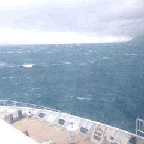
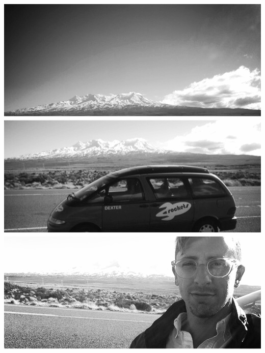

It was midnight not long ago. I slept so well - parked (perched really) on that steep hill in the middle of a Wellington rainstorm.
I left Taupo yesterday to crisp clear weather. I drove to the other side of New Zealand’s largest lake and stopped at a fish & chips shop known for its burgers. It was in a nondescript town. The burger was tasty.
Back in the car, driving. The landscape changes rapidly in New Zealand. The road winds for 20 minutes and looks almost sub-tropical - thick vegetation. Then the road climbs onto a plateau. The landscape reminds me of the landscape leading up to Mammoth Mountain. It’s volcanic with large plains of short brown brush. A large snowcapped volcano looms over it all. I pull my driving machine aside to take gaze at it and take a selfie.
Back in the car, driving. The landscape changes again. It’s rolling green pastures. There are a multitude of medium sized sheep farms and cattle farms. I estimate the average farm size at 20 acres. It feels like parts of Texas - only green.
Still driving. I pass through small towns at a slower pace. There is a town every 30 miles or so. This is New Zealand’s Highway 1. I think this must have been what traveling on Route 66 felt like 50 years ago. I pass through each town’s main center, and then just as quickly I’m back in scenery of open land and farmland. In the town of Bulls, I stop at McDonalds for a chocolate milkshake. There is a small classic car show going on in the parking lot.
Back in the car, driving. I drive for many more miles. As the sun sets and turns an orange-ish red, I’m met with the red of brake lights. I’m in the suburbs of Wellington and there is traffic. It’s Friday night.
Traffic lets up. I continue on Highway 1 and am in downtown Wellington before long. I park at the Ferry terminal and walk inside to purchase a ticket for the next morning’s Ferry crossing. I’m going to the South island. Leaving the ferry building, it’s started to sprinkle.
Back in the car, driving the streets of downtown Wellington. I find a spot to park, wander on foot, and eventually find a restaurant called Plum Cafe. It’s been raining now, and I strip off my wet jacket as the hostess leads me to a seat. There’s a musician playing. I have hot green tea and a meal of potatoes and meat. I linger.
It’s 2 hours later now, and I’m leaving the cafe. It’s pouring and it’s WINDY.
If Auckland reminds me of Los Angeles, it is at this point that Wellington reminds me of San Francisco. It is slightly dirtier, slightly seedier, and slightly more bohemian than elsewhere in New Zealand. It’s cold and windy. And most significantly, as I drive a bit around the bay, Mt. Victoria comes into sight and with it homes on steep hills - many of which look just like the quintessential San Francisco house.
I wind up the hill in my campervan, in the rain, and in the wind. The wind is wicked - tossing my campervan to and fro. I meander up and down the winding hillsides. No one else is out driving in this. I find a parking spot near two large trees blocking most of the wind. It’s on a steep hill. I put my car in park, pull the emergency break, and make my campervan bed. As I lay down I feel like I’m sleeping almost upside down as a result of the steepness of the hill.
The wind is still blowing and the rain falling heavy on the roof of the car, but I’m soon fast asleep.
And that leads me to now. I’m on a ferry crossing the Cook Strait. My campervan is parked below deck. I’m about halfway through the three and a half hour journey. I can see the South island through the rain, mist, and heavy seas. The sky is starting to clear.